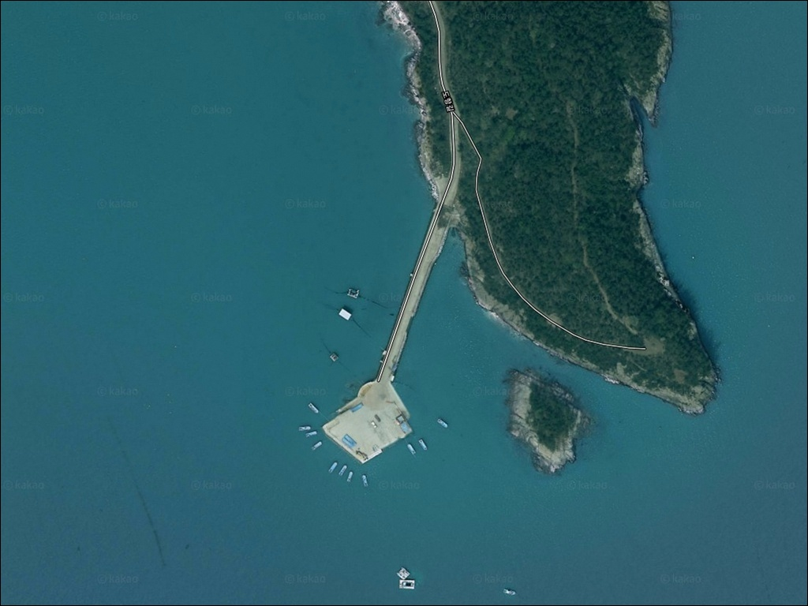
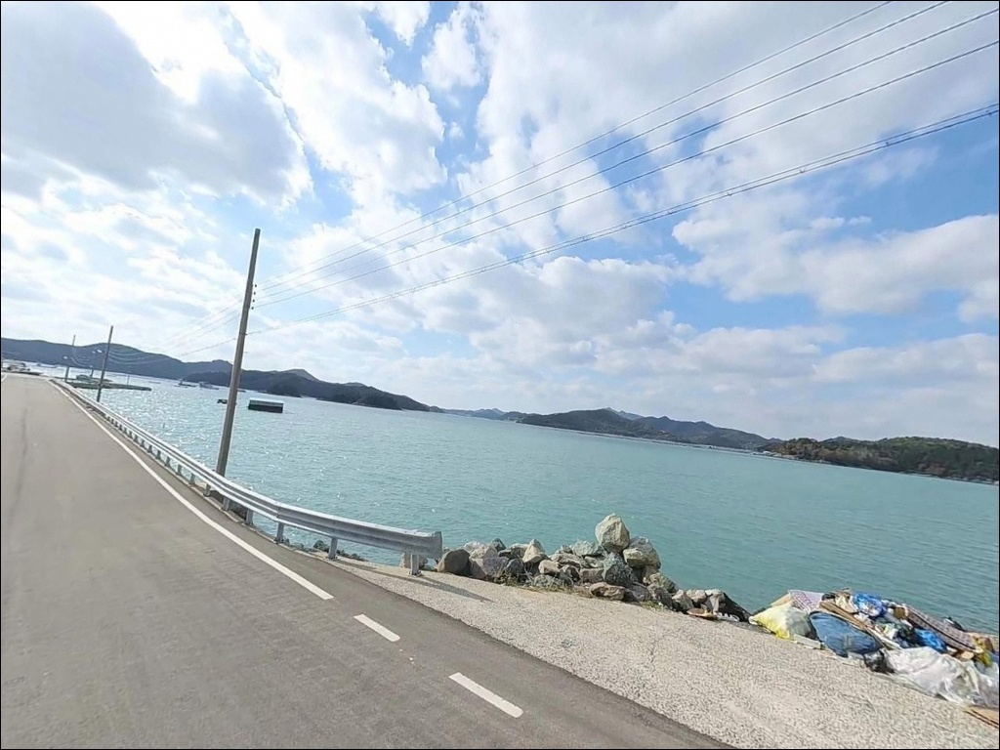
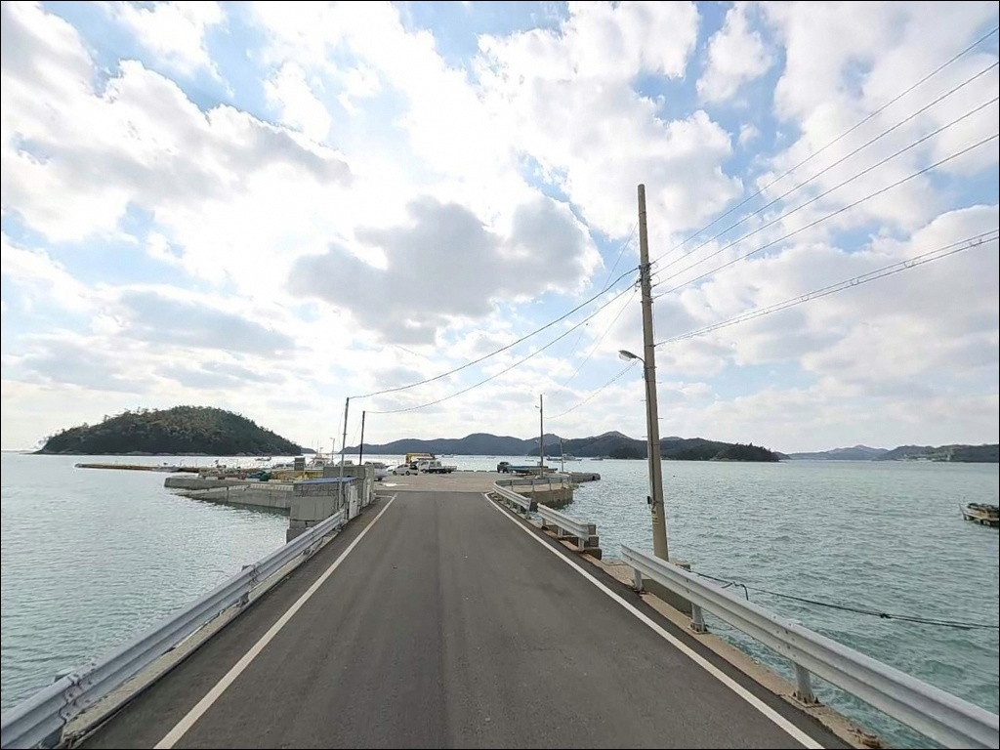
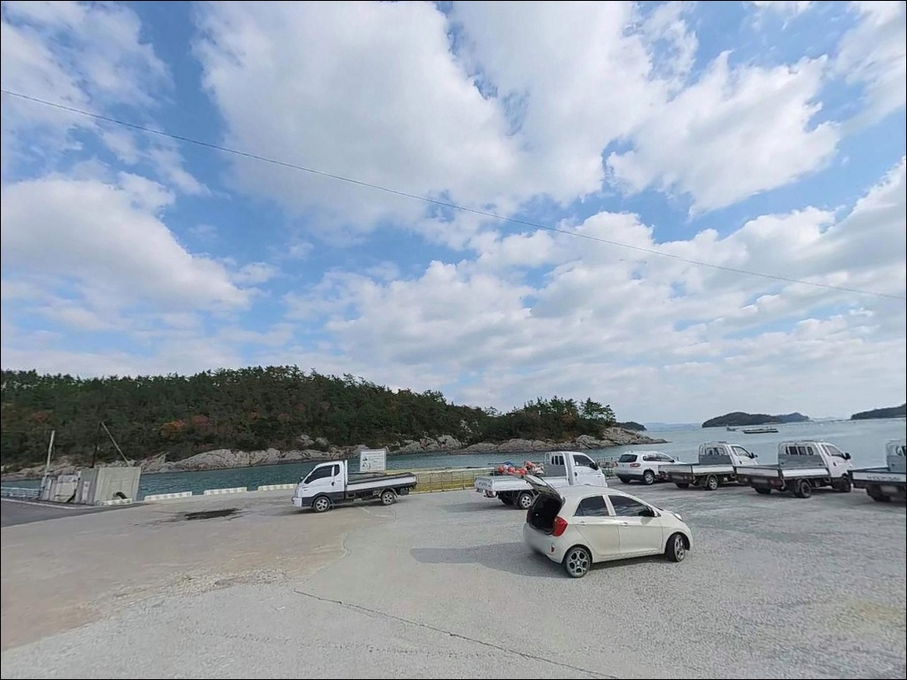
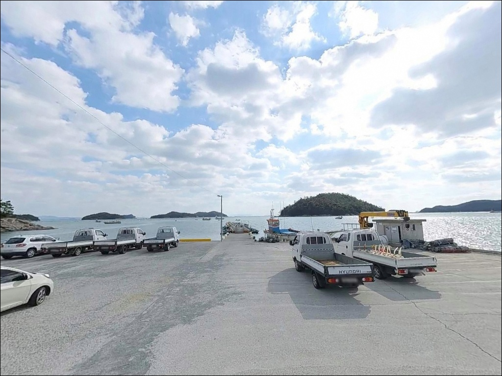
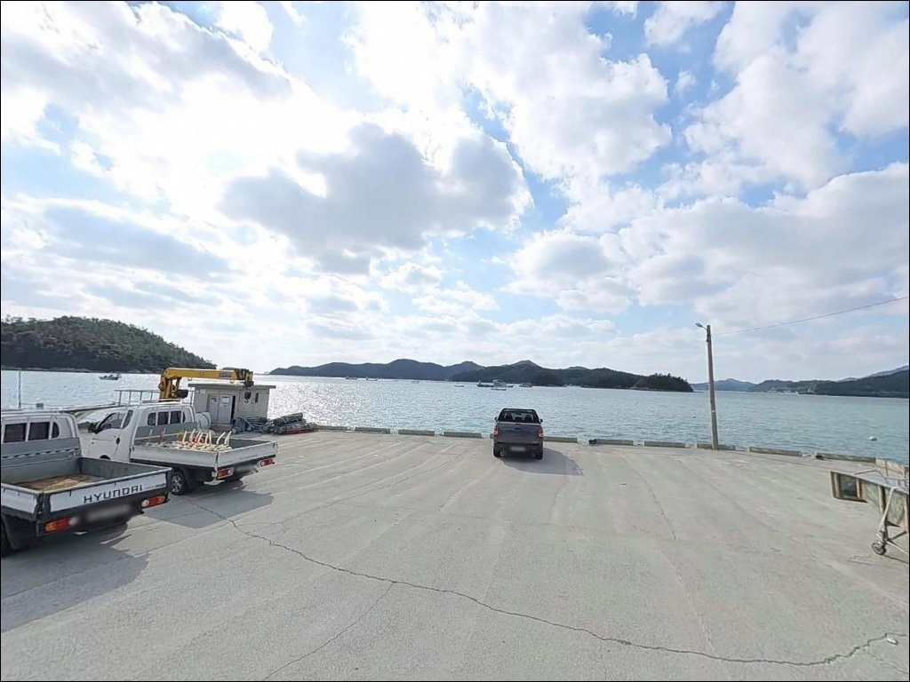
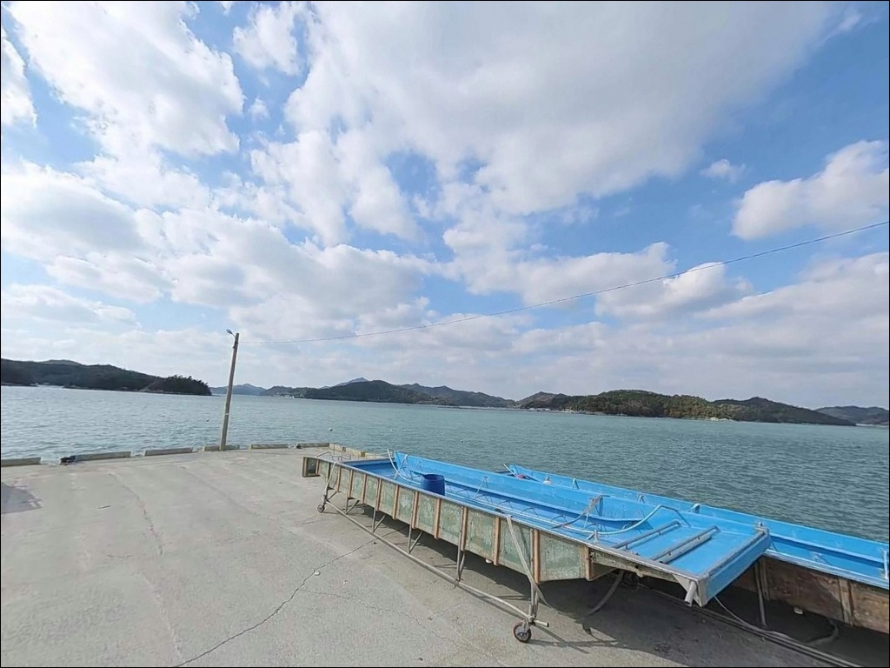
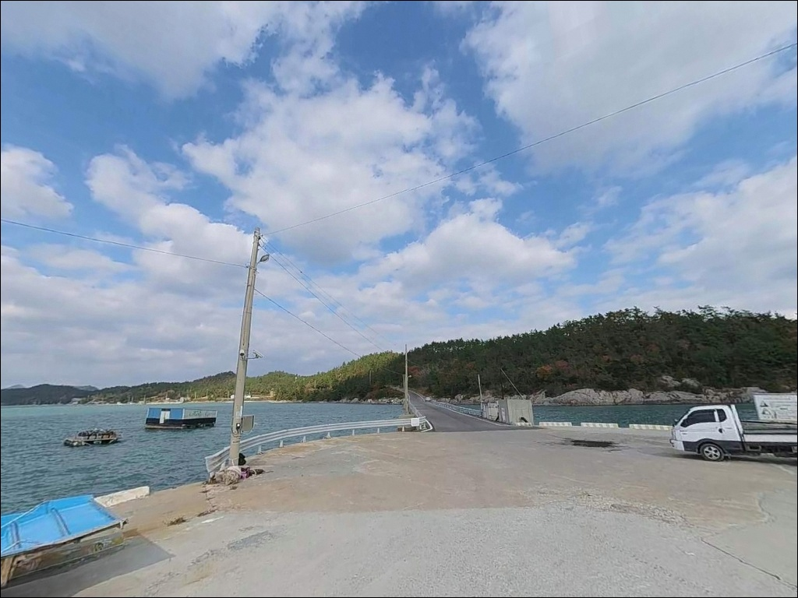
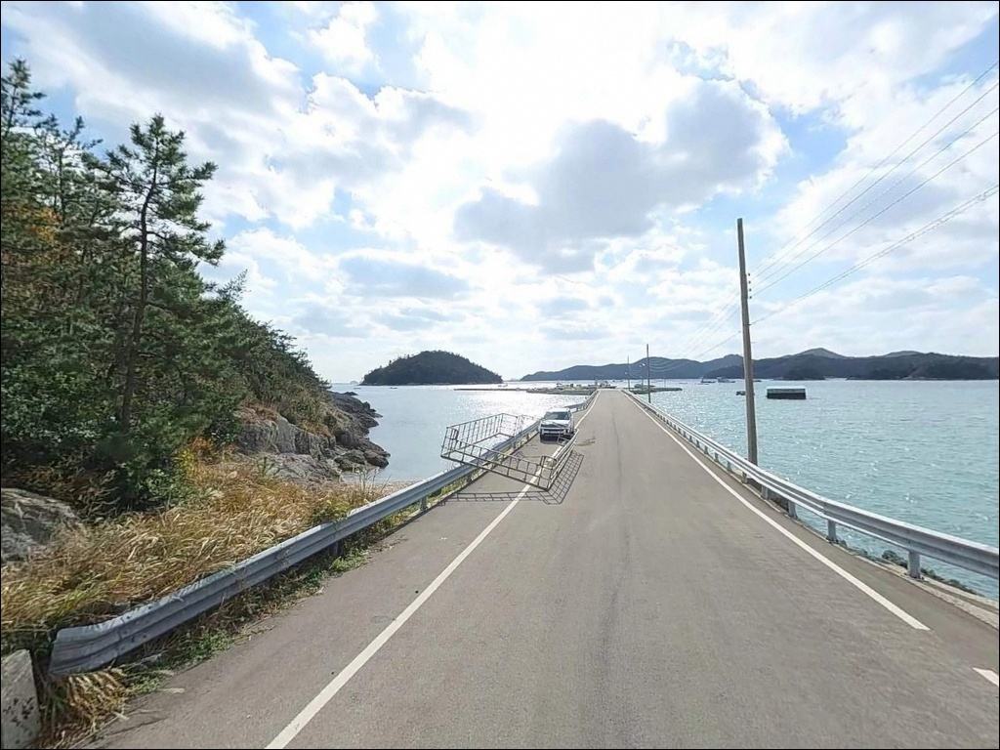

도항 선착장, 진도 전남 진도군 한적한 분위기 속 차박, 낚시를 함께 하기 좋은 곳
이 페이지에는 광고(제휴 링크 포함)가 있으며, 광고 링크를 통해 구매하면 운영자가 판매 수익 또는 수수료를 받을 수 있습니다. 포인트 사진: 카카오맵 스카이뷰·로드뷰. 이 페이지의 지도·사진 이미지는 카카오맵의 실제 서비스 이미지와 다를 수 있습니다.


포인트 안내
도항 선착장
전남 진도군 의신면 만길리 25-2
물때 확인 없이 도항 선착장에 들어서면
조류 방향과 유효한 낚시 자리가 완전히 달라집니다.
들물에는 선착장 방향으로, 날물에는 쏠비치 방향으로
조류가 흐르는 구조라,
타이밍을 모르면 도착해도 자리를 잡지 못하는
상황이 생기는 포인트입니다.
이 글은 도항 선착장의
진입 환경, 차박 여건, 물때 기반 낚시 조건에 집중합니다.
조황 단정이나 특정 어종 보장은
이 글의 범위에 포함되지 않습니다.

1. 진입 동선과 포인트 접근성
도항 선착장은 진도 의신면 만길리 해안 끝단에 위치한
소규모 마을 선착장입니다.
진도읍에서 의신면 방향으로 진입한 뒤
만길리 내부로 이어지는 마을도로를 따라
들어가는 구조입니다.
선착장까지 연결되는 마지막 진입로는
차량 한 대 왕복이 빠듯한 수준으로,
대형 SUV나 캠핑카를 가져간다면
출발 전 위성지도로 진입 구간을 먼저 확인하는 것이 기본입니다.
진입로가 좁은 마을 선착장에서는
출발 전 진입 동선을 확인하는 것이
방문 성패를 가릅니다.
인양기가 설치된 생활 선착장 구조라
어선 작업 동선이 우선이며,
주차 위치는 현장에서 판단하는 수밖에 없습니다.
선착장 진입부 도로변이나
마을 공터를 먼저 살피는 편이 안전합니다.
회차 공간도 넉넉하지 않은 구조이므로
후진에 자신 없는 차량이라면
미리 회차 가능한 지점을 파악해두는 것이
귀갓길을 편하게 만드는 방법입니다.

2. 차박 환경 및 야간 체류 여건
도항 선착장은 마을 선착장 바로 뒤편에
주거지가 붙어 있는 구조입니다.
민가와의 거리가 가까운 편이라
야간에는 소음과 조명을 최소화하는
스텔스 방식의 체류가 현실적입니다.
장기 차박보다는 낚시 후 1박 이내
단기 체류에 어울리는 성격의 포인트입니다.
차박이란 차량을 숙박 공간으로 활용하며
현장에서 하룻밤 머무는 여행 방식입니다.
도항 선착장 주변은 주차 공간이 좁고
어선 계류 공간이 우선인 구조라
대형 텐트나 어닝 전개는 어렵습니다.
가로등은 선착장 기준 일부 구간에 있을 수 있지만
조명 범위가 넓지 않아
야간 이동 시 개인 조명이 필수입니다.
쏠비치 리조트가 맞은편 해안에 위치하여
완전한 암흑 구간은 아닌 편이지만,
바람 방향과 기상에 따라
체류 여건이 달라지는 환경입니다.
출발 전 기상청 해상예보 확인이 필요합니다.


3. 주변 편의시설 및 인프라 현황
도항 선착장 반경 3km 이내는
편의점과 마트를 기대하기 어려운 환경입니다.
소규모 어촌 마을 구조상
식수, 얼음, 낚시 소품, 연료 모두
출발 전에 완비하는 것이 원칙입니다.
다만 인근에 쏠비치 진도 리조트가 위치해 있습니다.
리조트 웰컴센터 지하층에는 마트가 입점해 있어
간단한 식료품과 일용품을 구입할 수 있습니다.
낚시 중 부족한 소품이 생겼을 때
이 동선을 활용하는 것이 현실적입니다.
단, 의약품 종류는 제한적이므로
감기약, 소염제 등은 사전에 따로 챙겨야 합니다.

4. 방문 전 준비사항 및 체크 포인트
도항 선착장 방문 전 가장 먼저 확인해야 할 것은
물때입니다.
진도 해역은 조석차가 크고 조류가 빠른 것으로
알려진 해역입니다.
바다타임에서 의신면 기준 물때를 확인하고
날물 전후 타이밍에 맞춰 출발 시각을 잡는 것이
이 포인트의 기본 전략입니다.
선착장은 인양기가 설치된 생활 선착장으로
어업 활동이 이루어지는 공간입니다.
어선 계류 공간과 어구 주변에는
차량과 장비를 놓지 않는 것이 기본 매너입니다.
야간 낚시 시에는
헤드랜턴과 구명조끼를 반드시 착용해야 합니다.
선착장 가장자리에는 난간이 없는 구간이 많아
어두운 환경에서의 이동에 각별한 주의가 필요합니다.
기상 변화가 빠른 서남해 해역 특성상
출발 당일 아침 해상예보를 한 번 더 확인하는 것이
포인트 낭비를 막는 조건입니다.
채비 손실에 대비해 여분 채비를 넉넉하게 챙기는 것도
이 지역 낚시의 기본 준비입니다.

5. 날물 조류가 흐를 때
원투낚시 자리가 달라지는 이유
도항 선착장에서 낚시 자리를 제대로 잡으려면
조류 방향을 먼저 파악해야 합니다.
들물에는 도항 선착장 방향으로,
날물에는 맞은편 쏠비치 방향으로
조류가 흐르는 구조입니다.
이 흐름의 변화에 따라
유효한 캐스팅 방향과 포인트 위치가 달라집니다.
선착장 주변 수심은 4~5m 안팎의 내만형 구조로,
완만하게 떨어지는 바닥 지형이 형성되어 있습니다.
바닥층은 펄과 모래가 혼합된 구조로,
원투낚시 채비를 멀리 보낸 뒤
바닥을 천천히 끌어오는 방식이 기본입니다.
선착장 인양기 옆에서 금갑 방향으로
30m 이상 캐스팅하는 패턴이
이 포인트의 주요 공략법으로 알려져 있습니다.
내만 구조라 외해 직격 파도는 완화되는 편이지만,
진도 해역 전반이 조류가 빠른 지역인 만큼
사리 전후에는 흐름이 강해지는 구간이 생깁니다.
출조 전 의신면 일대 최신 조황을
반드시 검색해 보시기 바랍니다.


6. 포인트에 어울리는 낚시 스타일
이 포인트에서 가장 잘 맞는 낚시는
원투낚시입니다.
내만 수심과 펄·모래 혼합 바닥 구조,
날물 조류가 살아나는 시간대가
원투 채비를 운용하기에 유리한 조건을 만들어냅니다.
날물 전후를 노려 금갑 방향으로 캐스팅하는 패턴이
이 포인트 공략의 기본입니다.
이 일대 해역에서는 우럭, 노래미, 붕장어 등
바닥층 어종이 기대해볼 수 있는 구성입니다.
찌낚시도 조류가 흐르는 구간에서
시도해볼 만한 스타일입니다.
선착장 끝단이나 외측 구간을 탐색하는
릴찌 채비 흘림 방식이 이 포인트 구조에 어울립니다.
이 해역은 가을~초겨울 감성돔 시즌에
찌낚시 활용 빈도가 높은 구간으로,
의신면 인근 포인트들과 함께 묶어
탐색해볼 수 있습니다.
루어낚시는 야간 조건에서 노려볼 수 있습니다.
농어는 조류가 흐르는 시간대 야간 루어에
반응하는 편이라,
날물 이후 어둠이 깔릴 때
선착장 주변 조류 방향으로 루어를 흘리는 방식이
이 포인트 구조와 맞는 접근입니다.
갑오징어 에깅도 내만형 선착장에서
조류가 살아있는 시간대에 운용해볼 만합니다.

7. 대안 포인트와 플랜 B 동선
도항 선착장 진입 여건이 여의치 않거나
조류 조건이 맞지 않을 때는
수품항 방파제가 첫 번째 대안입니다.
접도 연육교를 건너 의신면 금갑리 방향으로
이동하면 닿는 국가어항으로,
방파제 입구부터 데크가 설치되어
접근성이 좋은 편입니다.
감성돔, 돌돔, 농어, 우럭 등
다양한 어종과 낚시 스타일을
운용할 수 있는 조건이 갖춰진 포인트입니다.
초평항 방파제도 동일 의신면 해역에 위치한
국가어항 포인트입니다.
도항 선착장보다 넓은 발판과
다양한 낚시 스타일을 활용할 수 있는 구조로,
두 포인트를 묶어 돌아보는 동선이
이 해역을 효율적으로 탐색하는 방법입니다.
차박 대안으로는 진도 가계해수욕장 일대가
대표적입니다.
신비의 바닷길 인근에 위치한 해수욕장으로
넓은 주차 공간과 편의시설이 갖춰져 있어,
낚시 후 가족 단위 체류에도
부담이 적은 환경입니다.

물때를 알고 가면
도항 선착장이 달리 보입니다
원투낚시나 찌낚시 위주로
조용히 낚시를 즐기는 낚시인이라면
도항 선착장의 내만형 지형 조건은
잘 맞는 구조입니다.
날물 타이밍을 맞추고
진입로를 사전에 확인해두면
생각보다 편하게 접근할 수 있는 포인트입니다.
반면 편의시설 없이 오래 머무는 체류형 차박을
원한다면 도항 선착장은 맞지 않습니다.
민가와 가까운 마을 선착장 특성상
물때 확인, 진입로 점검, 완전 자급 준비,
이 세 가지를 갖추고 가는 것이
이 포인트를 제대로 활용하는 방법입니다.
진도 해역 특유의 조류를 느끼며
조용한 마을 선착장에서 낚시와 1박 체류를
함께 즐기고 싶다면,
날물 타이밍 하나만 잘 잡아도
기억에 남는 출조가 될 수 있는 곳입니다.